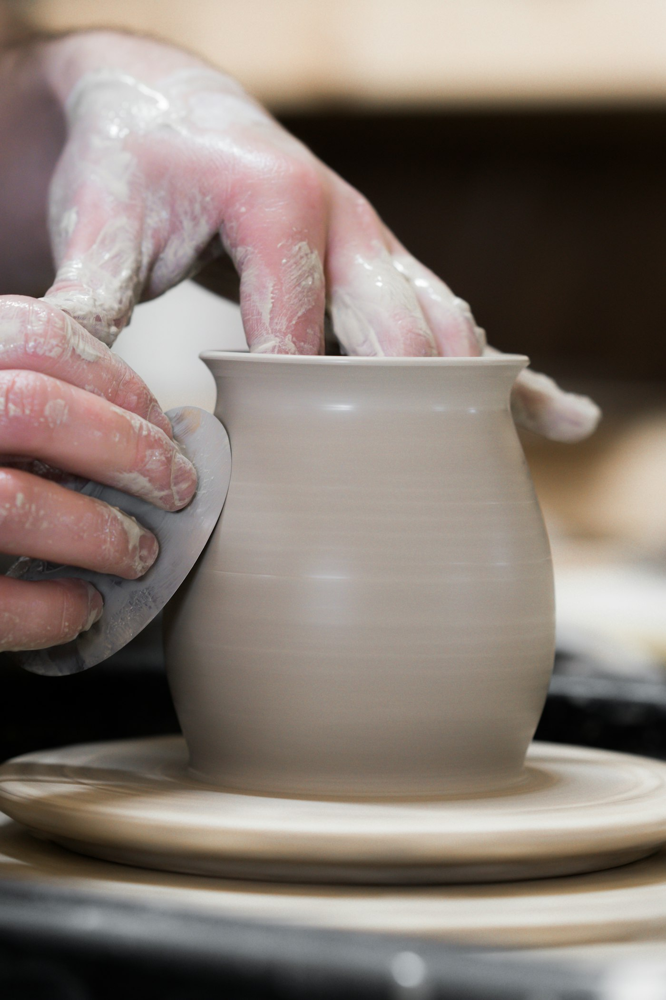
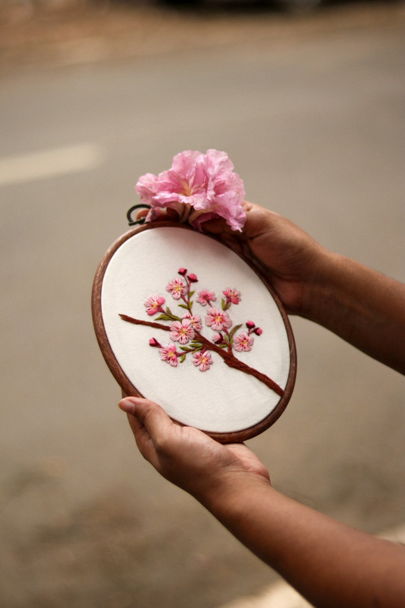
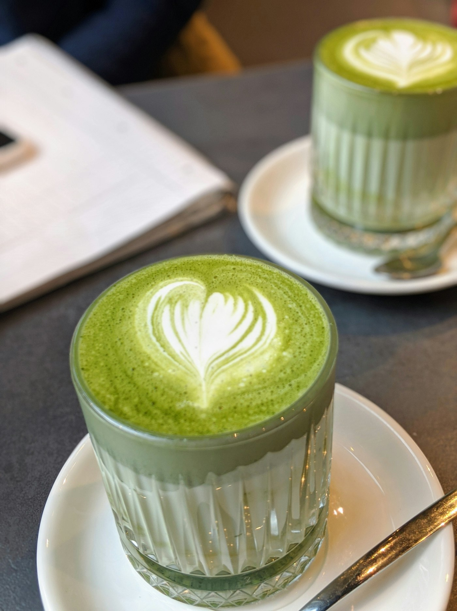
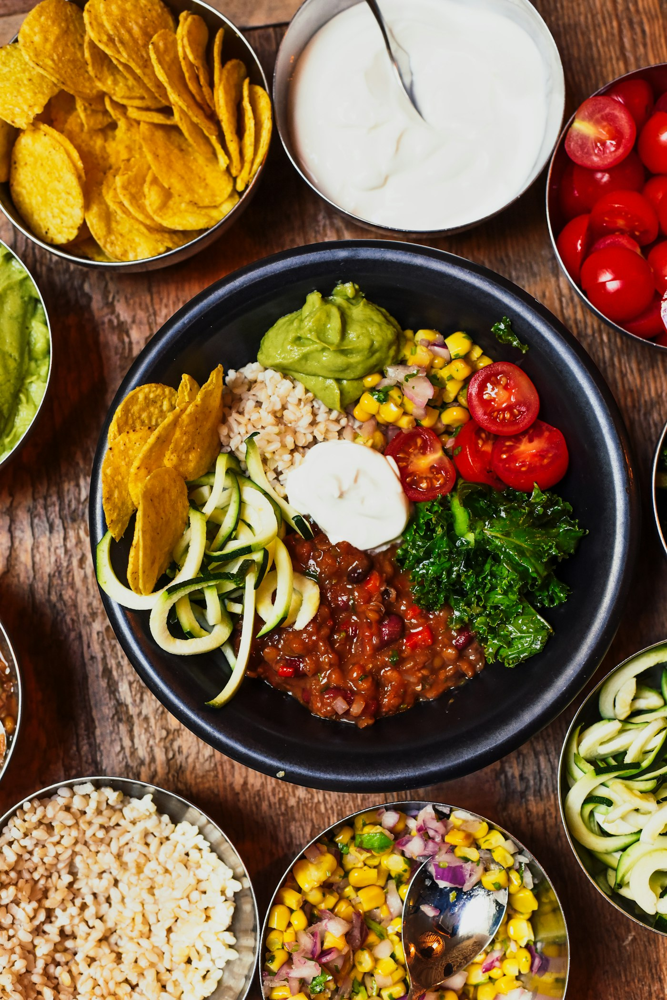

Colazione alla francese, pranzo vegetariano che cambia ogni settimana, matcha latte e un grande tavolo dove si mangia insieme. E quando c'è un laboratorio, si impara a fare qualcosa con le mani.


Camille Madamet viene dalla Bretagna. Sei anni fa è arrivata a Milano in Erasmus per studiare ingegneria chimica, e poi è rimasta. A un certo punto ha cercato qualcosa che avesse più senso per lei, e ha seguito l'altra parte di sé: quella legata al lavoro manuale e alla creatività.
A febbraio 2025 ha aperto Mica in via Teodosio: una stanza raccolta, un piccolo dehors e, al centro, un grande tavolo.
Volevo creare un posto che fosse un bar, ma anche un luogo di socialità, che connettesse le persone attraverso eventi e cose da fare.Camille, fondatrice
“L'idea del tavolo grande era proprio quella di creare un tavolo di condivisione, dove le persone possano mangiare, fare un workshop e conoscersi.”
Camille 12–14 posti a ogni laboratorio: prendi il tuo ✕La cucina è tutta vegetariana, con opzioni vegane, e la prepara Camille. Il menu del pranzo cambia ogni settimana.


Ci sono ragazze che arrivano da me e mi dicono: io faccio ricamo, io faccio illustrazione, oppure decorazione o calligrafia.Camille · il calendario lo fate anche voi
Mar, ven, sab · 9:00 – 17:30mer, gio · 9:00 – 20:00
@mica_barmilanoanche su TikTok